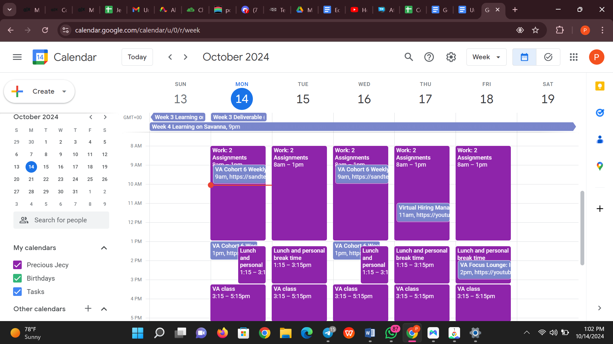
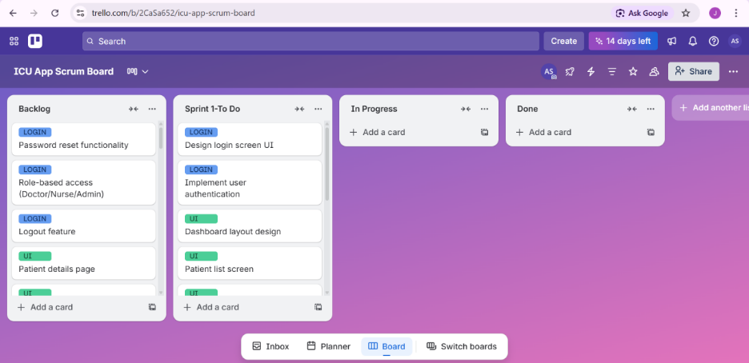
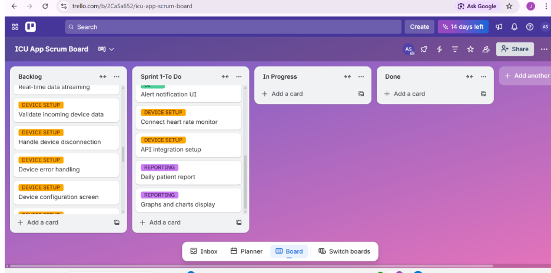
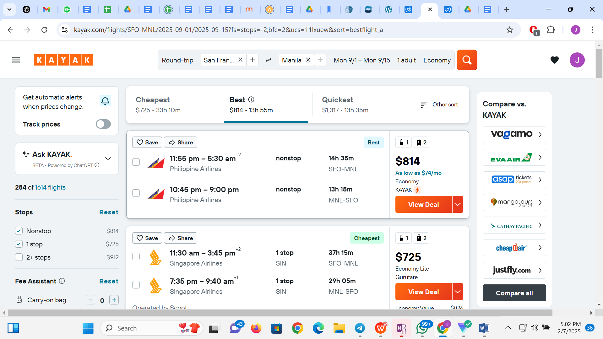
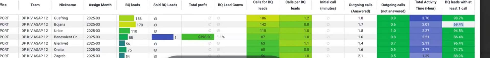
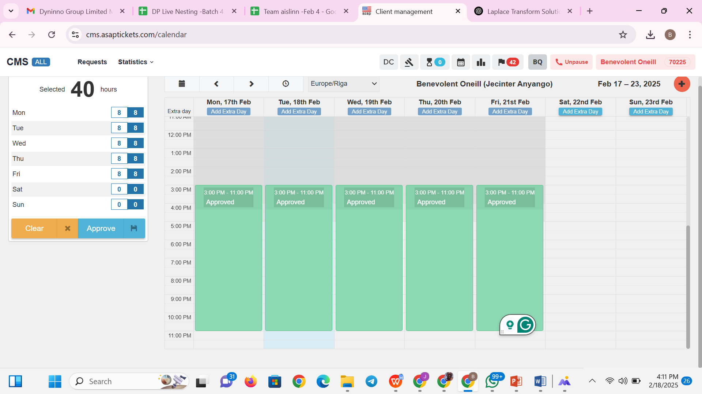
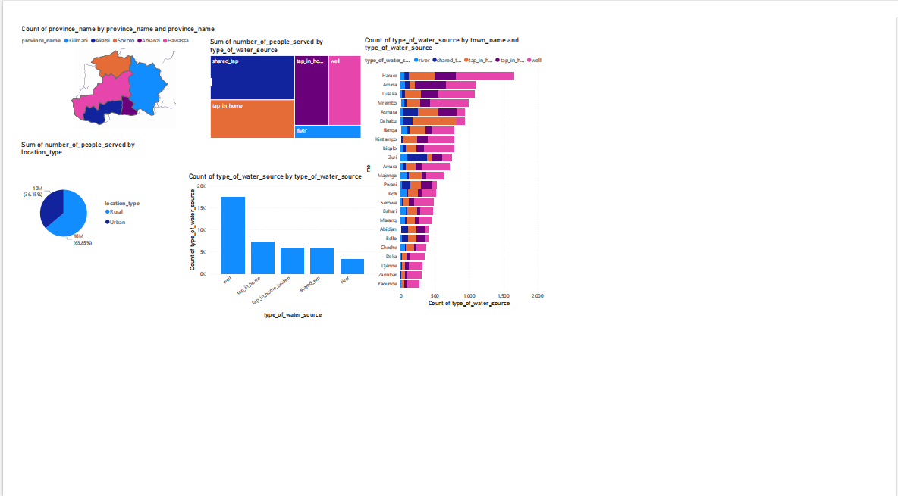
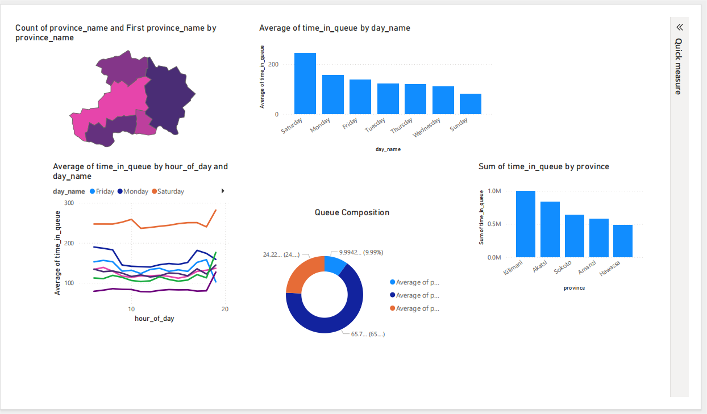

Executive & Administrative Support
Calendar and inbox management, scheduling, document organization, reminders, meeting coordination and day-to-day executive support.
EXECUTIVE VIRTUAL ASSISTANT · ADMINISTRATIVE & DATA SUPPORT
Reliable remote support for busy founders, executives and growing teams — from calendars, follow-ups and project coordination to research, reporting and data management.

ABOUT ME
I’m Jecinter Anyango, an Executive Virtual Assistant with experience supporting clients and remote teams with calendar and inbox management, scheduling, research, documentation, data entry, CRM updates, customer communication and task follow-ups.
My background in data and research is an added advantage: I’m comfortable working with spreadsheets, validating information, preparing reports and turning scattered information into something clear and useful. I enjoy creating order behind the scenes so the people I support can focus on decisions, clients and growth.
HOW I CAN HELP
Calendar and inbox management, scheduling, document organization, reminders, meeting coordination and day-to-day executive support.
Task tracking, deadline follow-up, project boards, action items, team coordination and keeping priorities visible.
Online research, structured briefs, data collection, comparison tables, summaries and clear reports for decision-making.
Professional communication, follow-ups, CRM updates, issue resolution, appointment coordination and accurate records.
Flight research, itinerary comparison, booking support, schedule coordination and travel-related follow-up.
Spreadsheet management, data validation, reporting, dashboards and practical workflow improvements for repetitive admin tasks.
SELECTED WORK
Structured a busy weekly schedule using time blocks for focused work, meetings, learning commitments and personal breaks. The approach keeps priorities visible while reducing scheduling conflicts.

Organized project work into clear stages — backlog, sprint/to-do, in progress and done — with labels to separate workstreams and make progress easier to track.


A sample workflow showing how I would keep an executive’s commitments from falling through the cracks: capture the request, assign priority, set a deadline, follow up and close the loop.
This is a portfolio demonstration created to show my working method, not client-confidential work.
Supported customers through travel research, itinerary comparison, quotation and follow-up while working within ASAP Tickets/Dreamport systems. This experience strengthened the same coordination, communication and detail-management skills I bring to executive support.
Performance is shown under my work nickname, Benevolent Oneill. Figures are a dated snapshot from the March 2025 report, not a claim about my full employment period.



Built visual reports from structured datasets to make trends and patterns easier to understand. This analytical skill strengthens the executive support I provide when leaders need clear information, not just raw spreadsheets.


EXPERIENCE
SnappyCX – Sustain, LLC · Remote
Reviewed, validated and standardized structured data while maintaining accuracy, consistency and quality-control requirements.Upwork & Contract Roles · Remote
Supported calendar and inbox management, scheduling, document organization, research, spreadsheets, CRM updates and task follow-ups.ASAP Tickets (Dreamport)
Managed customer inquiries, flight research, booking changes, payments, follow-ups and accurate customer records.
TESTIMONIAL
“Jecinter consistently demonstrated impressive responsiveness, punctuality, and attention to detail, tackling every task with diligence and professionalism. I truly appreciated how seamlessly she adapted to new responsibilities, requiring minimal oversight and quickly becoming a reliable contributor to our team.”
Stephanie Schnovel
Sustain Environmental
TOOLS
Google Workspace · Microsoft Office · Google Calendar · Calendly
Trello · Notion · Asana · monday.com
HubSpot · Zendesk · Zoho CRM · Ticketing systems
Slack · Zoom · Microsoft Teams · Google Meet · WhatsApp
Excel · Google Sheets · Power BI · SQL · Python · Tableau
Canva · ChatGPT · AI-assisted research & workflow support
LET'S WORK TOGETHER
I can help you stay organized, keep priorities moving and reduce the administrative work competing for your attention.